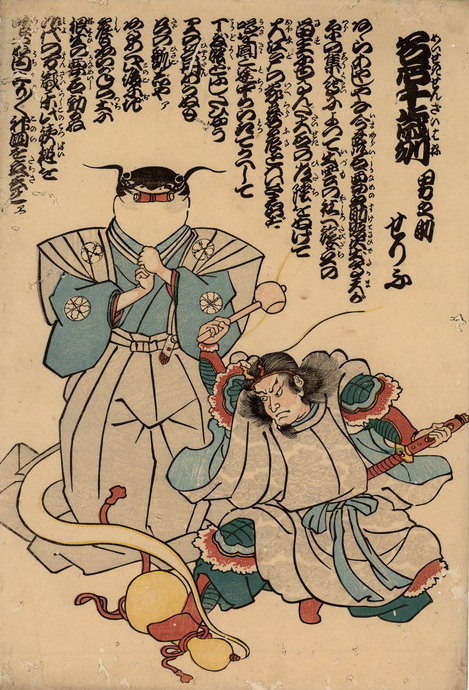

裃を着て巻物を口にくわえ、印を結んだ鯰の背後から瓢箪が滑り出ている。それを武装した鹿島大明神が踏みつけ、木槌で打とうとしている。
出典：親書誌：U426_nichibunken_0212：名石千歳刎男之助せりふ；メイセキセンザイハネオトコノスケセリフ／日付：2010／資源識別子：U426_nichibunken_0212_0001_0000
Copyright (c)2010- International Research Center for Japanese Studies, Kyoto, Japan. All rights reserved.